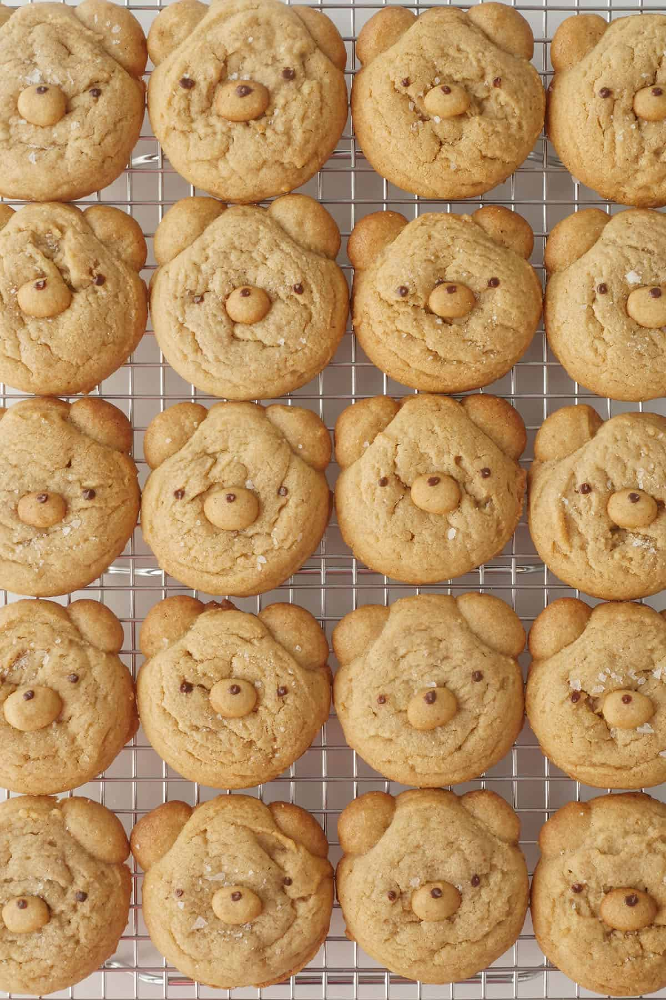

Cutest Peanut Butter Bear Cookies

Easy-to-handle salted peanut butter cookie dough for making cute bear shaped cookies. Dough freezes well for last-minute guests and holiday gifts.
Home
Ingredients
- 130 grams all-purpose flour
- ¼ + ⅛ teaspoon baking soda
- ¼ teaspoon sea salt*
- 130 grams smooth peanut butter*
- 100 grams unsalted butter, room temperature
- 60 grams granulated sugar
- 100 grams light brown sugar*
- 1 teaspoon vanilla extract
- 1 egg, room temperature
- Flakey sea salt (e.g. Maldon)*
- a few chocolate chips
Instructions
- Pre-heat oven to 325F.
- Whisk together the flour, baking soda and salt, set aside.
- In a stand mixer fitted with the paddle attachment, beat together peanut butter, room temperature butter and sugars until light and fluffy. Use a spatula to scrape the sides occasionally.
- Add vanilla extract and room temperature egg. Beat until it becomes a smooth mixture.
- Stop mixer, add flour mixture and stir on lowest setting until incorporated. Do not overmix.
- Optional: Wrap dough in plastic wrap and chill for a minimum of 4 hours, overnight is preferable to develop flavors and (for warm climates) prevent spread during baking.
- For the bear's ears: Take a small portion of the dough out of the fridge, roll it into small balls around 1.25 cm in diameter. Place in the freezer until it becomes frozen hard (around 30 minutes).
- For the bear's snout: Rpll dough to make small oval shapes around 1 cm wide. Place onto a small baking tray lined with paper or silicone mat.
- For the bear's head: Onto a separate regliar-sized baking pan lined with parchment paper or a silicone mat, drop the rest of the dough by rounded tablespoonflis (e.g. melon baller) 2 inches apart.
- Once the oven has fully pre-heated, carefully place the frozen bear ears onto the side of the bear's head in desired position.
- Bake the head with ears immediately on the middle rack for 12-14 minutes.
- Bake the snout on the rack below it. Take it out when it starts to turn golden brown throughout (around 7 minutes).
- Check on the heads after 10 minutes in the oven, take it out when the edges are golden brown and the center is slightly golden. It will continue to cook further on the pan.
- Sprinkle the flakey salt on top of the bear cookies while it's hot.
- Melt chocolate chips in the microwave until melted and smooth. Test consistency after each 15 second interval.
- Add some of the chocolate onto the snout and gently press it into the bear's face, creating a very slight depression for a more realistic effect.
- Use a fine brush to draw in the eyes and nose with the chocolate.
- Let bear cookies cool on the pan for 3 minutes, transfer to a cooling rack. When cooled, it will stay fresh in an air-tight container for 5-7 days.